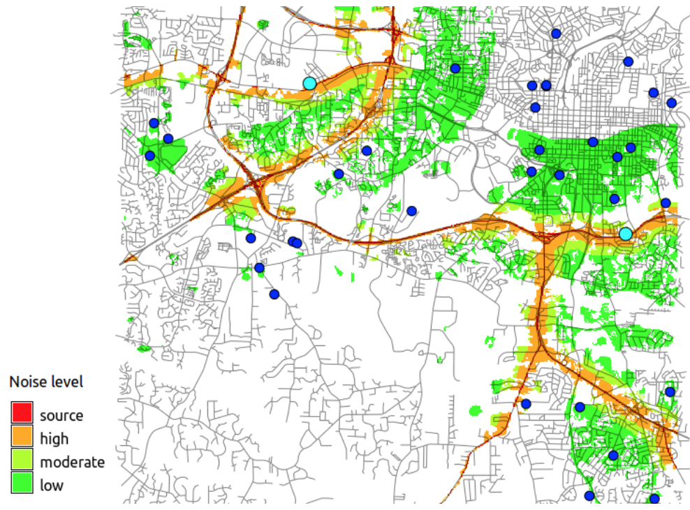

Geospatial Analysis
proximity, buffers, cost surfaces
Helena Mitasova
Learning objectives
- Understand different metrics for distance
- Define buffer operation, discrete and continous buffers
- Explain concept of cost surfaces
- Understand least cost path
Measuring distance
- Euclidean: shortest distance in plane
- Geodesic: shortest distance over curved surface, great circle on sphere: orthodrome
- equation: http://mathworld.wolfram.com/GreatCircle.html
- Lp metrics on meshes or grids
- Linear referencing systems
Measuring distance: spheroid
Geodesic: shortest distance over curved surface, great circle on sphere: orthodrome
Measuring distance
- Generalized distance: Lp metrics for measuring distance on meshes or grids
- distance between $a(x_1,y_1)$ and $b(x_2,y_2)$
- $dp(a,b)=[(x_1-x_2)^p + (y_1-y_2)^p]i^{1/p}$
- $p=2$ : Euclidean distance
- $p=1$ : Manhattan (Taxicab, City block) metric
- Linear Referencing Systems: location is defined by its linear distance
from a known point on a route
and distance is measured along segments of a network; used for roads, utilities, waterways
Measuring distance: networks
Manhattan metric, Linear Referencing Systems


Measuring feature length
- feature length is scale dependent
- what is the length of NC coastline? Neuse river?
- vector model: length depends on level of detail (point density representing the feature)
- raster model: resolution and level of detail
- fractals
Measuring feature length
Compare stream length from NHDS and stream derived from a local 1m lidar-based DEM


NHDSstreams are generalized - they have simplified geometry, leading to shorter length.
Keep scale in mind when comparing length of features represented at different scales
Measuring feature length
Compare length of NC Coastline from NC GIS and from a World map 1:10M


World map scale 1km=0.1mm - narrow barrier islands are not represented
Raster map buffer operations
Proximity analysis function
discrete:
- creates buffer zones (equal distance zones) from a given feature (point, line or area)
- applies to raster map layers representing discrete objects
- resolution should be sufficiently higher (cell size should be n-times smaller) than distances (buffer widths)
continuous:
- derives proximity raster from a given feature
- computes distances from a feature for every cell, "growing" in perpendicular direction
- resolution controls the distance precision - step
Raster map buffer: points
Map forested areas around schools
Create point buffers at selected distances

Raster map buffer: points
Use map algebra to combine with landcover
school_buf_forest = if(landcl98 == 5 && school_buff, school_buff, 0)

why 0 and not null?
Use vector operations to add comlumn to school attribute table and add percent forested area within the buffer,
keep in mind our 30m resolution
Raster map buffer: areas
Map developed areas within walking distance of lakes
Create buffers at a given distance, compare Euclidean and Manhattan distance metrics and continuous buffer


Raster map buffer: areas
Use map algebra to combine with landcover
lake_buf_dev = if(landcl98 == 1 && lake_buff, lake_buff, 0)


Raster map buffer: lines
Identify developed areas and schools that may be impacted by noise from a highway
Create buffers and use map algebra to combine with landcover
school_buf_forest = if(landcl98 == 5 && school_buff, school_buff, 0)

why 0 and not null?
Raster map buffer: lines
Use vector operations to identify the schools and compute number of children potentially impacted
school_buf_forest = if(landcl98 == 5 && school_buff, school_buff, 0)

Use vector operations to find schools within the buffer and compute number of children potentially impacted
Cost surfaces
Cumulative (accumulated) cost surface measures proximity based on cost:
- raster representation of cumulative cost
of reaching the target point(s) from any location in the given region.
Input cost map
- value assigned to a cell represents cost of traversing that cell,
- cost can be based on time, energy, etc.
Cumulative cost surface to a point
Proximity surface represents
shortest path (distance) from each cell to the target point if cost for each cell is 1

Cumulative cost surface
To measure the proximity (distance), traverse the region in:
standard 8 directions,
Knight 16 directions


cost for each cell is 1
Cost map
If cost is spatially variable, we need to define cost to traverse each grid cell,
usually expressed as time $t[s]$ derived, for example, from:
- speed data for driving,
- slope, vegetation density and obstacles for walking on trails
Example: cost surface derived as time $t[s]$ needed to traverse a $d[m]$ resolution grid cell
$$ t = d / v $$
where, $v$ is speed, approximated e.g., by speed limit stored in roads/streets data layer.
Cost map is computed using arithmetic expression in map algebra.
Cost map
- Speed limit and cost raster maps.
- Cost is time [sec] to traverse a 30m cell, off-road cells are assigned 5 mi/hr.


Cost can be defined per grid cell or per map unit, depending on implementation
Cumulative cost surface
Cumulative cost surface represents the time to reach the target point A from anywhere in the region.

The higher the hill the more time it takes to reach A, highways are valleys
Least cost path
- using the cumulative cost surface, find the least cost (fastest) path to the target point
- least cost path follows the oposite directions used for creating the cumulative
cost surface: back-links
- similar to steepest slope line used for flow routing with terrain replaced by cost surface
Least cost path: back-link raster
- direction of least cost path to the target from all grid cells = backlink map
- equivalent to surface gradient direction (aspect) map

Aspect map derived from the cumulative cost cost surface
using r.slope.aspect, colored consistently with Arc backlink output. Backling map from Amy Nau
Least cost path between two points
Least cost path from a given point to the target follows gradient direction - backlinks


Least cost path applications
- find firefighters escape routes
- design optimal trails
- extract foredune ridge from coastal DEM
- find safe access routs during natural disaters (earthquakes, floods)
- estimate time for watewater to get to treatment plant from any point in sewershed
Least cost path applications
Locate the firestation that can reach the accident site $A$ on the highway the fastest and identify the shortest path:
- use query to extract cumulative cost (travel time) to A from all firestations, add the time
to the attribute table
- identify the firestation $F_1$ with the lowest cost
- trace the least cost path from $F_1$ to $A$

Example from the assignment shows two LCP, note the issue with overpass
Cost surface for walking
Empirical equation to estimate time $t[s]$ to traverse a grid cell walking in complex terrain:
$$
t = a\Delta s + b \Delta h_u + c \Delta h_{md} + d \Delta h_{sd} + w.f
$$
- $a,b,c,d$ [s/m]: weights, functions of inverse speed $1/v$
- $\Delta s$ [m]: distance across a grid cell
- $\Delta h_u, \Delta h_{md}, \Delta h_{sd}$ [m] - elevation difference upslope, moderate downslope and steep downslope
- $w.f$ [s]: added time needed to traverse a cell due to friction, $f$ is a friction map, $w$ is weight
- walking upslope and steep downslope increase cost, moderate downslope decreases cost.
- default values for $a,b,c,d$ are empirical coefficients, based on man walking effort at standard conditions.
Input data for estimating cost
Walking cost combines inputs derived from elevation $\Delta h_u, \Delta h_{md}, \Delta h_{sd}$
and land cover is used for the friction map $f$.

low friction: developed areas, streets and roads; moderate friction: forest;
extreme friction (barrier): lakes
Cumulative cost surface
Cumulative cost surface and isochrones to support search for lost person
last seen at point A.

Orange isochrone delineates search area for given time of 1.5 hr
Cumulative cost surface from lines
Cumulative cost distance from major roads based on travel time (cost) estimated
from speed limit. Target is lines represented by set of points.

areas within the cost distance less than a given threshold
Summary
- measuring distance
- buffers
- cost surfaces